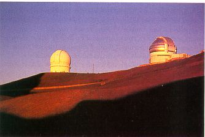
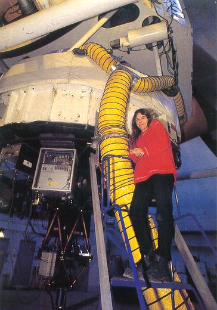

(Extrait de Ciel et Espace No 338 de juillet 1998).

C'EST comme un rituel : "Vérifier que toutes les fac2 tures ont bien été réglées, fermer l'eau et l'électricité, troquer les sandales contre des rangers aux semelles épaisses, jeter un oeil sur les plantes tropicales du patio, jeter pêle-mêle dans le sac de voyage jeans, pulls, CD de jazz et grosses chaussettes de laine." Avant de grimper à bord de sa Pontiac Fiero, une belle américaine en livrée rouge, trop puissante pour les routes sinueuses qu'elle devra emprunter, Marie-Claire Hainaut-Rouelle repasse une dernière fois en pensée la liste de ce qu'elle doit emporter pour son voyage d'une semaine "là-haut". La jeune femme habite Waimea, une paisible bourgade à mi-chemin entre les verts pâturages de Parker Ranch et les plages blondes du Pacifique, et qui semble perpétuellement hésiter entre les morsures du Soleil et les averses tropicales. Aujourd'hui, il fait beau. En partant de chez elle, Marie-Claire voit distinctement son lieu de travail, 4 000 m plus haut. Entre les lambeaux de brume qui s'accrochent au flanc du volcan Mauna Kea, les minuscules billes blanches des coupoles de l'observatoire d'Hawai`i se détachent sur le bleu du ciel.
Marie-Claire Hainaut-Rouelle est observing assistant à l'observatoire franco-canadien d'Hawai`i. En clair, elle pilote le célèbre télescope CFH de 3,6 m. Étonnante trajectoire que celle de cette Belge qui, avant de découvrir à Hawai`i sa vocation pour un métier traditionnellement masculin, aura couru le monde, cherchant sa voie, de Liège à Munich, en passant par Santiago du Chili et Honolulu...
Marie-Claire Rouelle nait à Liège en 1965 et, vingt ans plus tard, n'a guère eu l'occasion de quitter sa ville lorsqu'elle entre, indécise, à l'université. "Quinze jours avant le début des cours, je ne savais toujours pas ce que je voulais faire." Dotée d'un bon coup de crayon, elle est plutôt attirée par la peinture et s'intéresse à l'histoire de l'art. Mais, pragmatique, consciente que les débouchés sont rares dans cette branche, elle s'inscrit au cours de physique. La rencontre d'Olivier Hainaut, astronome, changera radicalement le cours de sa vie. "Après notre mariage, en 1989, Olivier a obtenu un poste à l'observatoire de La Silla. J'ai abandonné sans regret mon doctorat de physique et nous sommes partis pour le Chili." Marie-Claire y découvre le milieu astronomique. "En tant que physicienne, j'ai voulu travailler à l'observatoire. Durant trois ans, j'ai fait de la programmation pour l'ESO. Enfait, je ne savais pas encore très bien ce que je voulais faire. Je tâtonnais." Paradoxalement, le déclic se fera lorsque Marie-Claire et Olivier se retrouveront en Europe, à Garching, le siège de l'ESO installé dans la banlieue de Munich. C'est sous l'incertain ciel bavarois que Mme Hainaut-Rouelle réalise qu'elle aime l'astronomie. Elle reprend à l'ESO un programme de recherche d'astéroï&des et part régulièrement en mission à La Silla.
A 2 400 m d'altitude, dans la coupole du minuscule télescope
de 50 cm de l'observatoire, les conditions sont spartiates. MarieClaire
découvre une astrononùe "à la dure". Ici, pas
de salle de contrôle chauffée, pas d'ordinateur pour piloter
l'instrument. "C'était assez physique. En hiver les observations
duraient une dizaine d'heures d'affilée. J'étais seule
dans ma coupole. Le pointage se faisait manuellement, et je devais
grimper au foyer du télescope toutes les deux minutes. Mais
j'aimais ce télescope, où il fallait tout faire soi-même."
Lorsqu'au petit matin, harassée, la jeune femme s'endort enfin,
c'est d'astéroï&des qu'elle rêve. "En fin de
mission, je faisais toujours le même cauchemar: j'étais au
télescope et je perdais l'astéroï&de que j'avais suivi
pendant des nuits et des nuits."
En 1995, son astronome de mari obtient un poste à l'université
d'Hawai`i, et Marie-Claire doit de nouveau partir de zéro.
Si la vue de son balcon, au dixième étage d'un building
de Waikiki, plonge sur la fameuse plage d'Honolulu, elle ne rêve
plus que d'une chose : travailler à l'observatoire du Mauna Kea.
Elle postule pour un emploi auprès de chacune des équipes
travaillant là-haut et, en attendant sa chance, la jeune femme volontaire
s'occupe comme elle peut, en travaillant dans des boutiques de luxe de
Waikiki. Dialoguant indifféremment en anglais, français,
allemand ou espagnol ("J'ai même appris quelques rudiments de
japonais"), elle vend deux ans durant des tailleurs Chanel à
une clientèle aisée. Au printemps 1996, le ciel lui
sourit enfin : une belle visiteuse japonaise, Hyakutake, s'installe entre
le Bouvier et la Grande Ourse, au-dessus du Mauna Kea. Au sommet,
on s'affole un peu. "L'équipe de la Nasa, qui utilise le
télescope de 3 m infrarouge IRTF a reçu desfonds supplémentaires
pour suivre la comète en permanence. Mais, comme elle n'avait
pas le personnel nécessaire surplace, elle m'a proposé ce
boulot."
Sur la montagne, on comprend vite que Marie-Claire n'a pas son pareil pour amadouer les télescopes. Une fois disparue Hyakutake, elle commence par remplacer les opérateurs de télescope en vacances ou en congé maladie, depuis la coupole de la Nasa jusqu'à celle du télescope de 2,2 m de l'université d'Hawai`i. Enfin, un poste se libère au télescope Canada-France-Hawai`i (CFHT), le vieil et fier instrument qui, plus que tout autre, a élevé au rang de mythe le site du Mauna Kea. Elle postule immédiatement. "J'étais arrivée à un point où je ne pouvais plus me contenter de tirer le meilleur parti des conditions qui se présentaient. Je voulais aussi que ce soit enrichissant pour moi." Elle est embauchée.
A moins d'une heure de chez elle, après avoir négocié les lacets de la Saddle Road, qui s'insinue entre les deux grands volcans d'Hawai`i, le Mauna Kea et le Mauna Loa, Marie-Claire a abandonné sa Pontiac sur le parking de Hale Pohakue, le camp de base de l'observatoire. À 2 800 m d'altitude, c'est un passage obligé. Tout le personnel de l'observatoire dort ici et les repas s'y prennent en commun avant la journée, on la nuit, de travail au sommet.
Demain, après un jour d'acclimatation, Marie-Claire empruntera en 4 x 4 la piste tracée dans la cendre qui mène, à travers les paysages d'une autre planète, jusqu'à son télescope, à 4 200 m d'altitude. "En montant, on note inconsciemment les conditions météo, le vent, le niveau où s'arrête la mer de nuages. C'est empirique, bien sûr mais cela nous permet déjà de savoir à quoi s'attendre au sommet." Arrivée là-haut en fin d'après-midi, Marie-Claire croise l'équipe technique de jour, qui entretient, répare, améliore en permanence le télescope. Ensuite, seule dans l'immense bâtiment cylindrique, haut comme un immeuble de dix étages, elle fait le tour du propriétaire. "Il y a mille choses à faire ; s'assurer d'abord que tout est en ordre, depuis la ventilation de la coupole jusqu'aux machines hydrauliques qui assurent les mouvements du télescope. Ensuite libérer le télescope de toutes les sécurités qui l'empêchent de bouger durant la journée, puis alimenter l'instrumentfocal en azote liquide." Au coucher du soleil, les astronomes peuvent maintenant arriver. Marie-Claire est prête à prendre la barre de son grand vaisseau des étoiles.
En fait de barre, le CFHT se pilote plutôt depuis la console d'un ordinateur, dans la salle de contrôle située sous le télescope. Pendant que John Coltrane ou Miles Davis s'installent aux instruments pour accompagner l'équipe d'observation au bout de la nuit, Marie-Claire affiche sur son écran les coordonnées de la premiére cible céleste indiquée par l'astronome et dirige le télescope vers elle. Si la météo est calme, l'instrument va suivre des heures durant le lointain quasar, comme un grand cargo de nuit filant en vol automatique. Pendant ce temps, son pilote en profite pour écrire un e-mail à ses parents liégeois, un autre au mari travaillant à La Silla, un troisième au copain chilien qui pilote le 4 m de Cerro Tololo. Vers minuit, la jeune femme grimpe dans la coupole plongée dans l'obscurité, afin d'alimenter en azote liquide la caméra CCD ou le spectrographe du télescope.
Seule "maître à bord" de son vaisseau, elle doit aussi s'assurer que rien ne puisse mettre ses occupants en danger, ni bien sûr endommager la machine. "Nous disposons ici d'une centrale météorologique complète. Depuis la salle de contrôle, je vérifie le taux d'humidité de l'air la température extérieure et, bien sûr la vitesse du vent. Quand les nuits sont claires, c'est un bonheur de se promener sur le catwalk [le chemin de ronde qui ceint la coupole, à une vingtaine de mètres au-dessus du sol]. En revanche, quand l'anémomètre est bloqué, que je dois sortir dans un vent congelant, ce n'est plus vraiment une partie de plaisir". Même à Hawai`i, une altitude de 4 200 m, c'est toujours de la très haute montagne: "Les consignes de sécurité sont drastiques. Je dois fermer la coupole dès que les conditions extérieures mettent le télescope en danger Lorsqu'un problème sérieux apparaît, les opérateurs de télescope s'appellent d'une coupole à l'autre et nous décidons d'évacuer la montagne, parfois en convoi, quand il y a trop de vent et de neige. Évidemment, il est parfois difficile d'annoncer aux astronomes la fermeture de la coupole. Les plus jeunes sont les plus stressés. Leur thèse dépend du travail effectué ici, alors si leur nuit d'observation est fichue... Les anciens sont plus philosophes."
Ce contact avec les astronomes, Marie-Claire en apprécie l'intimité
lorsqu'à la pause tout le monde se retrouve devant un café
chaud, ou la difficulté... "Nous travaillons ensemble dix à
douze heures d'affilée parfois. Les chercheurs sont épuisés
par l'altitude. Il faut savoir arrondir les angles. L'hypoxie peut
poser des problèmes graves (il y a ici des masques à oxygène
dans chaque pièce) ou plus simplement une grande fatigue, des erreurs
de jugement, des problèmes relationnels."
Le
métier, pourtant, va changer : "La direction de la société
Canada-France-Hawai`i désire que je m'implique davantage dans
la gestion des instruments du télescope et l'aide aux astronomes.
En fait, à l'avenir piloter un télescope sera un jeu d'enfant.
J'espère donc m'investir vraiment dans les observations astronomiques.
Comme, à terme, les astronomes ne viendront plus physiquement à
l'observatoire, mes collègues et moi ferons les observations à
leur place. Par la suite, je voudrais participer aux programmes de
recherche et au traitement des données. Cela me permettrait
de faire de l'astronomie encore plus en profondeur"
Après une semaine passée au-delà des nuages, l'observing assistant du CFHT revient sur terre, non sans mal : "La descente est fatigante et le retour à un rythme de vie normal difficile. Mais c'est également excitant de se retrouver quelques heures après avoir quitté une montagne enneigée, au bord d'une plage, un cocktail à la main, l'esprit totalement libre." Toutefois, MarieClaire parait définitivement magnétisée par sa montagne. "Ici, j'ai vraiment trouvé ma voie. Je ne me rendais pas compte à quel point j'aimais le côté pratique des choses. Et puis, le site du Mauna Kea est exceptionnel... Le paysage est magnifique et menaçant. C'est une nature impitoyable, sans aucune trace de vie. C'est difjîcile à expliquer cette attirance pour un lieu tout à la fois magique et inhospitalier." Parfois, en fin de nuit, ManeClaire Hainaut-Rouelle grimpe au foyer primaire du télescope, au sonmiet de la coupole. Quand la grue-portique l'emmène tout là-haut, elle ne résiste pas au plaisir d'ouvrir l'immense trappe et de l'orienter vers l'est : "De là, je peux admirer le lever du soleil sur la mer de nuages et profiter de mon belvédère. C'est le plus haut de tout l'océan Pacifique."
Serge Brunier
(Extrait de Ciel et Espace No 338 de juillet 1998).